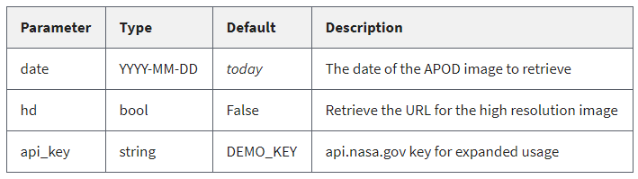

API viene del inglés Application Programming Interface, y se refiere a la interfaz que expone un programa para que pueda ser usado desde otro. En el caso APIs web, el servidor exponer urls que al ser visitadas devuelven datos de acuerdo a la estrucutra de la API.
A continuación mostraré una lista APIs que se pueden usar, en la mayoría de ellas es necesario el registro, y la generación de una llave (API key). Para ver una explicación más detallada de cómo usar javascript para hacer los llamados a estas URLs visitar: Cómo hacer llamados a una API?
Esta API permite obtener datos de la nasa, incluyendo imágenes. Para usarla primero se debe visitar la página para generar un API key.
Luego de obtener la API key, que debe ser similar a
V2q52eIfgecYd9vn7ji3SeIa9rlxSs91BXV6od9i, simplemente
debe visitar la página que corresponda a los datos que quiera, por
ejemplo:
https://api.nasa.gov/planetary/apod?api_key=V2q52eIfgecYd9vn7ji3SeIa9rlxSs91BXV6od9i
La lista completa de APIs disponibles se encuentra en este link.
Aquí voy a demostrar la funcionalidad de algunas de estas.Astronomy picture of the day: como su nombre lo dice, esta api da como resultado una imagen de astronomía de un día en particular.
Los parámetros que requiere se pueden ver en la siguiente tabla, algunos de ellos son opcionales y tomarán el valor default si no son especificados.
